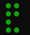

Blogging is hard
Without helpful scripts writing a blog can be hard to do. There are a lot of things to remember!
- The structure of a yaml header
- How to save the document
- How to properly render in-line code
- The command needed to render the quarto markdown to html (it’s true, this blog is written using quarto)
- The usual git commit and push commands (the website is all open source on github)
- … and many other things I care not to remember
- oh wait even remembering to write a blog post can be hard!
So, I’ve made it easier for myself. I recently wrote a bash script that does everything I need to get started writing a blog post.
The whole blog is structured around quarto markdown format and so this alone makes life much easier to do.
The script
Let’s start at the top of the script and work our way down. First I define 6 variables these are mainly colours (Yes I’m one of those people that like colour in the bash script😂 for me its easier to show yes (in green) and no (in red) that way it’s a subconscious thing. If I see something written in red I might be entering the danger zone).
Also, here I create a variable to where the blog is stored locally and the GitHub address of where this repo is.
Finally, at the bottom I made a function to get user input for:
- The title of the blog
- The description of the blog
code part 1
repo="https://github.com/adam-coates/adam-coates.github.io"
blogdir=~/adam-coates.github.io/posts
green='\e[32m'
red='\e[31m'
purple='\033[0;35m'
clear='\e[0m'
ColorGreen(){
echo -ne $green$1$clear
}
ColorRed(){
echo -ne $red$1$clear
}
ColorPurple(){
echo -ne $purple$1$clear
}
get_info() {
read -p "Enter a title: " title
read -p "Enter a description: " description
}Next I created a function that I often use if I know a piece of code involves doing x for a certain amount of time without any output I like to have a visual ‘spinner’ output on the screen that shows me that a process is working.
This will be clear later on in the code.
This spinner works by getting the process ID otherwise known as PID of a process and outputs these characters ⣾,⣽,⣻,⢿,⡿,⣟,⣯,⣷. The hardest part is actually how to display these characters to replace the character before it. Otherwise, the bash output might look a bit something like this:
So after a character is printed out, there is a special unicode character that actually moves the cursor back one place on the screen (almost acting like a backspace). This deletes the current visible character and places the new one in its place.
code part 1.1
function spinner() {
# Spinner characters
local spin='⣾⣽⣻⢿⡿⣟⣯⣷'
local charwidth=3
# Make sure we use non-unicode character type locale
# (that way it works for any locale as long as the font supports the characters)
local LC_CTYPE=C
# Run the command passed as arguments and capture its PID
"$@" &
local pid=$!
local i=0
tput civis # Cursor invisible
while kill -0 $pid 2>/dev/null; do
local i=$(((i + $charwidth) % ${#spin}))
printf "\e[32m%s\e[m" "${spin:$i:$charwidth}" # Green font color
printf "\033[1D" # Move the cursor back one position
sleep .1
done
tput cnorm # Cursor visible
wait $pid # Capture exit code
return $?
}Quarto template
Next I created a function to actually generate a template of the quarto markdown document needed to write a blog post such as this one you’re reading right now.
I start by getting helpful info. Today’s date and date and time. I then make a new directory in the blog local directory and then create the ‘.qmd’ document called index.
Next comes the boilerplate yaml header for every blog post. The title, description, (if I want github comments enabled at the bottom of the post), date, categories and any other additional .css that I might need.
There is a whole myriad of yaml header options that are described on the quarto website. But for a basic, get-going, blog the yaml below is all I need.
Finally I open the newly made document, in my favourite text editor neovim.
code part 1.2
create_file() {
date=$(date +"%Y-%m-%d")
timestamp="$(date +"%Y-%m-%d-%H:%m")"
localdir="$blogdir/$date/"
mkdir "$localdir"
# Cd into the directory
cd "$localdir" || exit
# Create the file in the specified directory
touch "$localdir/index.qmd"
# Format the title by removing dashes
title="${title//-/ }"
# set up the yaml frontmatter
echo "---" >>"$localdir/index.qmd"
echo "title: \"$title\"" >>"$localdir/index.qmd"
echo "description: \"$description\"" >>"$localdir/index.qmd"
echo "#image: \"preview.png\"" >>"$localdir/index.qmd"
echo "comments:">>"$localdir/index.qmd"
echo " giscus:">>"$localdir/index.qmd"
echo " repo: \"adam-coates/adam-coates.github.io\"">>"$localdir/index.qmd"
echo " mapping: \"title\"">>"$localdir/index.qmd"
echo "date: \"$date\"" >>"$localdir/index.qmd"
echo "categories: []">>"$localdir/index.qmd"
echo "draft: false # setting this to `true` will prevent your post from appearing on your listing page until you're ready" >>"$localdir/index.qmd"
echo "#css: style.css">>"$localdir/index.qmd"
echo "---" >>"$localdir/index.qmd"
# Open the file in Neovim
nvim '+ normal 2GzzA' "$localdir/index.qmd"
}Checking if a backup is needed
I then create a function that checks if files stored locally are the same as files stored in my mounted backup drive. Here this function does two things.
First check if a file that exists locally is or isn’t stored in my backup.
It breaks the loop here if that’s the case since this is faster.
If all the files’ metadata are the same in both the local dir and stored in my backup, then it checks if the number of bytes are the same.
It breaks the loop here if that’s the case, since if the bytes differ then the files aren’t the same
Checks the contents of the files. It’s true that the bytes of two files may be identical but with differing content. The script uses the md5sum command to get the checksum of the files. If the content differs so will the check sum.
This will all be apparent later. But basically this function is used to backup only when local changes are made.
code part 1.3
function check_directories {
dir1="$1"
dir2="$2"
differences_found=false
# Find all files in dir1
files=$(find "$dir1" -type f)
# Iterate over each file in dir1
for file in $files; do
# Get corresponding file path in dir2
file_in_dir2="${file/$dir1/$dir2}"
# Check if the file exists in dir2
if [ ! -f "$file_in_dir2" ]; then
echo "File $file_in_dir2 does not exist in $dir2"
differences_found=true
continue
fi
# Use cmp command to check if files differ
if ! cmp -s "$file" "$file_in_dir2"; then
echo "Files differ:"
echo " $file"
echo " $file_in_dir2"
# Calculate the checksums of the files
checksum1=$(md5sum "$file" | awk '{ print $1 }')
checksum2=$(md5sum "$file_in_dir2" | awk '{ print $1 }')
# Compare the checksums
if [ "$checksum1" != "$checksum2" ]; then
echo "File contents are different."
differences_found=true
fi
fi
done
if [ "$differences_found" = true ]; then
return 1
else
return 0
fi
}Bash is on the case $1 in write) esac
Now lets move onto the case statement. Case statements are great in bash because they’re easy and let you do parse inputs to scripts with ease. Bash’s handy $1 built-in variable means the first argument passed to a script. So say I run a script called my_script.sh foobar the value stored in $1 will be foobar.
So when I run my script and the argument is “write”. The script gets some info (title & description), makes the document and opens neovim.
When I type the argument “backup”, the script immediately copies all contents of the blog to my mounted drive (regardless of checking for file differences)
When I type “pub”, the script pushes all changes to GitHub. It asks for input first what the commit message should be.
When I type “preview” the script changes directory (cd’s) into the locally stored blog directory and runs the quarto preview command.
code part 2
case "$1" in
write)
get_info
create_file
;;
backup)
echo -ne "$(ColorRed 'Backing up now ... ')"; echo ""
spinner cp -rf ~/adam-coates.github.io/ /mnt/g/blog/
echo -ne "$(ColorGreen 'Files now backed up \u2714')"; echo ""
;;
pub)
read -p "Enter a commit message: " commitmessage
cd $blogdir/..
git add .
git commit -m "$commitmessage"
git push -u origin main
;;
preview)
cd "$blogdir/.."
quarto preview
;;
*)
echo "Please enter either write|backup|pub|preview"
;;
esacBacking up!
Finally the script does a backup if I did not use “backup” as the first argument to the script. This is something I learnt the hard way. Always backup. Backup many times, to the cloud ☁, to a usb, to another hard drive. No matter how you do it back up 💾💿. Its so important.
So in this script this section always runs!! It first asks the user if they would really want to back up. If the user says (YES, yes, Y or y) then it will proceed. First it does the handy file check to see if a backup is even needed. i.e if there is a difference between my mounted drive and locally stored files is found then it will backup else, nothing will happen.
Here the visual spinner comes in handy since it helps show me that something really is happening and backing up. I like this and it puts me at ease (not to mention it looks kinda cool)

As I mentioned at the beginning I use colours and for this not backing up will always be in red. Since this really isn’t a good thing.
code part 3
if [[ "$1" != "backup" ]]; then
echo -ne "Would you like to back up? $(ColorGreen 'yes')/$(ColorRed 'no')
"
read -r check
check=$(echo "$check" | tr '[:upper:]' '[:lower:]')
if [[ $check == "yes" || $check == "y" ]]; then
echo -ne "$(ColorPurple 'Checking if needing to back up ')"; spinner sleep 5; echo -ne "$(ColorGreen '\u2714')"; echo ""
if ! check_directories $blogdir /mnt/g/blog/adam-coates.github.io/posts/; then
echo -ne "$(ColorRed 'Different files detected backing up now ... ')"; echo ""
spinner cp -rf ~/adam-coates.github.io/ /mnt/g/blog/
echo -ne "$(ColorGreen 'Files now backed up \u2714')"; echo ""
else
echo ""
echo -ne "$(ColorGreen 'Files are already backed up \u2714')"; echo ""
fi
elif [[ $check == "no" || $check == "n" ]]; then
exit
else
echo "Invalid choice. Please enter 'yes' or 'no'. Exiting now."
fi
fiAnd that’s about it. I’ll put the full script available on GitHub and please feel free if you have questions to write them below, or on GitHub itself.